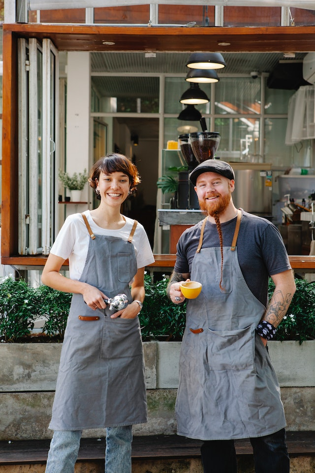

About Us
Meet the founder and owner of Brewed Awakening, John Smith. John has been passionate about coffee since his early college days, where he used to spend hours studying in local coffee shops. After graduating, John decided to pursue his dream of opening his own coffee shop. With his extensive knowledge of coffee and his keen business sense, he launched Brewed Awakening with the goal of providing the best coffee and customer service in town. When he's not working hard at the shop, John enjoys spending time with his family and exploring new coffee brewing techniques.
John's passion for coffee is matched only by his commitment to his community. As a longtime resident of the area, John has made it a priority to give back through various community events and charity fundraisers. He's always looking for ways to support local businesses and artists, and he frequently hosts art shows and live music performances at Brewed Awakening. When you visit the shop, you'll often find John chatting with regulars and newcomers alike, eager to share his knowledge and love of coffee with everyone who walks through the door.